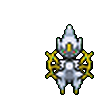
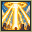
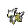

Pokédex / #493
Arceus #493
Normal
It is said to have emerged from an egg in a place where there was nothing, then shaped the world.
Generation 4 · Sinnoh

Stats
| Attack | 120 | |
|---|---|---|
| Defense | 120 | |
| Sp. Atk | 120 | |
| Sp. Def | 120 |
In the wild
| Wild level | 100–100 |
|---|---|
| HP | 120 |
| Experience | 15 |
| Egg groups | – |
Evolution
- Does not evolve.
Moves
| Level | Move | Type | Category | Power | Energy | Cooldown | Effect | |
|---|---|---|---|---|---|---|---|---|
| 1 | Seismic Toss | Fighting | Physical | 80 | 80 | 12s | Seismic Toss deals damage and has no secondary effect. | |
| 5 | Cosmic Power | Psychic | Status | – | 100 | 60s | Cosmic Power boosts the Defense and Special Defense of the user by one stage each. | |
| 10 | Quick Attack | Normal | Physical | 40 | 40 | 6s | Quick Attack deals damage and has no secondary effect. | |
| 15 | Echoed Voice | Normal | Special | 40 | 50 | 6s | Echoed Voice deals damage and has no secondary effect. | |
| 20 | Snore | Normal | Special | 50 | 60 | 10s | Snore can only be used whilst the user is sleeping and will fail if the user is not. | |
| 25 | Swift | Normal | Special | 60 | 60 | 9s | Swift deals damage and ignores changes to the Accuracy and Evasion stats. | |
| 30 | Hidden Power | Normal | Special | 60 | 60 | 18s | A unique attack that varies in type depending on the Pokemon using it. | |
| 35 | Extreme Speed | Normal | Physical | 80 | 80 | 15s | Extreme Speed deals damage and has no secondary effect. | |
| 40 | Earth Power | Ground | Special | 9 | 100 | 21s | Earth Power deals damage and has a 10% chance of lowering the target's Special Defense by one stage. | |
| 45 | Healing Wish | Psychic | Status | 250 | 150 | 90s | The user become with 1 HP and all party members recover full HP. | |
| 50 | Hyper Voice | Normal | Special | 90 | 100 | 21s | Hyper Voice inflicts damage and has no secondary effect. | |
| 55 |  | Judgment | Normal | Special | 100 | 120 | 23s | Judgment calls down beams of light on everything around the user. |
| 60 | Future Sight | Psychic | Special | 120 | 120 | 15s | Future Sight deals damage, but does not hit until two turns after the move is selected. | |
| 65 | Hyper Beam | Normal | Special | 150 | 160 | 34s | Hyper Beam deals damage but the user can't attack on the next turn. | |
| 70 | Recover | Normal | Status | – | 90 | 120s | User recovers 50% of its max HP. |
Field abilities
CutRock SmashHeadbuttFlashStrength
Special abilities
None
Egg moves
None
Technical machines
Aerial AceAvalancheBlizzardBrick BreakBullet SeedCalm MindDouble TeamDragon ClawDream EaterEarthquakeEnergy BallFacadeFire BlastFlamethrowerGiga DrainHailHidden PowerHyper BeamIce BeamIron TailLight ScreenOverheatPoison JabProtectPsychicRain DanceReflectRestRoarRock SlideRock TombSafeguardSandstormSecret PowerShadow BallShock WaveSludge BombSolar BeamSubstituteSwords DanceThunderThunder WaveThunderboltToxicWater Pulse
Drops
| Item | Amount | Chance | |
|---|---|---|---|
| Mind Plate | 1–5 | 100% | |
| Meadow Plate | 1–5 | 100% | |
 | arceus doll | 1 | 0.1% |